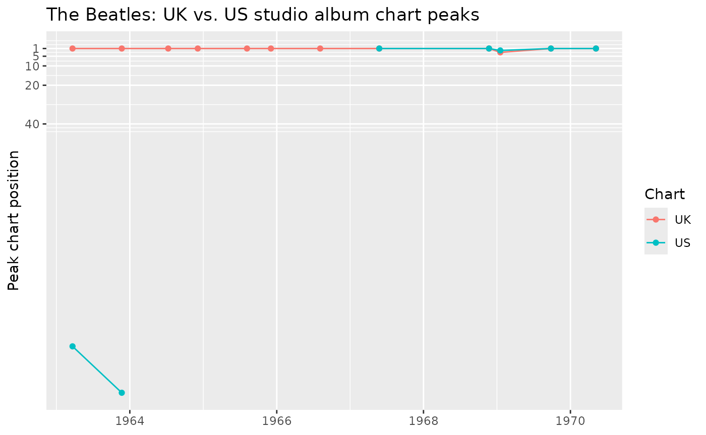

Retrieving a Wikipedia Table: The Beatles' Studio Albums
Source:vignettes/articles/get-wikitable.Rmd
get-wikitable.Rmd
library(wikitools)
library(dplyr)
#>
#> Attaching package: 'dplyr'
#> The following objects are masked from 'package:stats':
#>
#> filter, lag
#> The following objects are masked from 'package:base':
#>
#> intersect, setdiff, setequal, union
library(stringr)
library(tidyr)
library(ggplot2)wikitools is built to facilitate the retrieval and
manipulation of Wikipedia data. [as_wikitable()] converts an R data
frame into wikitext table markup for pasting into an article.
[get_wikitable()] goes the other direction: it fetches the live,
rendered HTML of a Wikipedia article and pulls one of its
class="wikitable" tables back out as a tidy tibble.
This article walks through fetching one real table – the studio-album discography on en.wikipedia.org/wiki/The_Beatles_albums_discography – and cleaning it up for analysis, which is most of the actual work: a Wikipedia table’s cells are HTML, not neatly typed data, so bullet lists, footnote markers, and placeholder dashes all need to be dealt with before anything downstream (a chart, a join, a summary) will work.
Fetching the table
The page has several wikitables – one each for studio
albums, live albums, compilation albums, mash-ups, box sets, and EPs.
get_wikitable() picks one out by matching a
(case-insensitive) substring against each table’s
<caption>:
albums <- get_wikitable(
"The Beatles albums discography",
match = "List of studio albums, with selected chart positions and certification"
)
albums
#> # A tibble: 12 × 12
#> Title Title_link `Album details` UK AUS CAN FRA GER NOR US
#> <chr> <chr> <chr> <chr> <chr> <chr> <chr> <chr> <chr> <chr>
#> 1 "Please… https://e… "Released: 22 … 1 — 19 5 5 2 155
#> 2 "With t… https://e… "Released: 22 … 1 — 1 5 1 1 179
#> 3 "A Hard… https://e… "Released: 10 … 1 1 — — 1 1 —
#> 4 "Beatle… https://e… "Released: 4 D… 1 1 — — 1 1 —
#> 5 "Help!" https://e… "Released: 6 A… 1 1 — 5 1 1 —
#> 6 "Rubber… https://e… "Released: 3 D… 1 1 — 5 1 1 —
#> 7 "Revolv… https://e… "Released: 5 A… 1 1 — 5 1 2 —
#> 8 "Sgt. P… https://e… "Released: 26 … 1 1 1 4 1 1 1
#> 9 "The Be… https://e… "Released: 22 … 1 1 1 1 1 1 1
#> 10 "Yellow… https://e… "Released: 17 … 3 4 1 4 5 1 2
#> 11 "Abbey … https://e… "Released: 26 … 1 1 1 1 1 1 1
#> 12 "Let It… https://e… "Released: 8 M… 1 1 1 5 4 1 1
#> # ℹ 2 more variables: Certifications <chr>, Sales <chr>Three attributes travel along with the tibble: the caption actually matched, the article URL that was fetched, and any single-cell “legend” rows that were pulled out of the table body rather than kept as a data row:
attr(albums, "caption")
#> [1] "List of studio albums, with selected chart positions and certification"
attr(albums, "notes")
#> [1] "\"—\" denotes that the recording did not chart or was not released in that territory."That note explains the "\u2014" placeholders scattered
through the chart columns below – worth keeping in mind once those
columns get converted to numbers.
(One caveat surfaced while writing this: the page actually has
two captions containing “studio albums” – a near-duplicate,
much shorter table further down covers a US-only release, “Introducing…
The Beatles”, that isn’t part of the main UK-catalog list above.
get_wikitable() uses the first match and prints a message
when a match string is ambiguous like this, so it’s worth
passing enough of the caption text to disambiguate, as done above.)
Header names and article links
By default, get_wikitable() also picks out any
row-header column that links to another article – here, each album title
links to its own page – and adds it as an adjacent
Title_link column holding the absolute URL. Ordinary cells
(like the record label link buried inside Album details)
are left alone; only the row-header link is extracted, since it is the
one most likely to identify the row’s own subject.
Two small helpers turn this into something more usable:
clean_column_headers() converts the raw header text into
snake_case variable names (lower-casing words but leaving all-caps
acronyms like UK/AUS alone), and
link_to_article_name() turns a _link column’s
URL into a plain article title:
albums <- albums |>
clean_column_headers() |>
mutate(title_article = link_to_article_name(title_link)) |>
relocate(title_article, .after = title)
albums |> select(title, title_article, title_link)
#> # A tibble: 12 × 3
#> title title_article title_link
#> <chr> <chr> <chr>
#> 1 "Please Please Me" Please Please Me https://e…
#> 2 "With the Beatles" With the Beatles https://e…
#> 3 "A Hard Day's Night" A Hard Day's Night (album) https://e…
#> 4 "Beatles for Sale" Beatles for Sale https://e…
#> 5 "Help!" Help! https://e…
#> 6 "Rubber Soul" Rubber Soul https://e…
#> 7 "Revolver" Revolver (Beatles album) https://e…
#> 8 "Sgt. Pepper's Lonely Hearts Club Band" Sgt. Pepper's Lonely Hear… https://e…
#> 9 "The Beatles (\"The White Album\")" The Beatles (album) https://e…
#> 10 "Yellow Submarine" Yellow Submarine (album) https://e…
#> 11 "Abbey Road" Abbey Road https://e…
#> 12 "Let It Be" Let It Be (album) https://e…Worth a glance before moving on: the linked article title doesn’t
always match the display title verbatim. Revolver links to the
disambiguated article “Revolver (Beatles album)”, and “The Beatles ("The
White Album")” links to plain “The Beatles (album)” – useful to know if
title_article is ever used as a join key against another
data source.
Choosing the right article interactively
title_article is a high-quality key because it reflects
a Wikipedia editor’s deliberate choice of which article each album title
links to. But when a table doesn’t link its rows (or when
matching names against Wikipedia from scratch), the usual fallback is
search — and the top search hit is not always the right article.
Searching “A Hard Day’s Night” puts the film above the album; searching
“With the Beatles” returns the band’s article; searching “Revolver”
returns the firearm.
choose_wikipedia_matches() handles this interactively:
for each name it shows the top n search candidates (six by
default) in a utils::menu(), with each article’s short
description appended so similarly-titled articles are easy to tell
apart, plus a “None of these (skip)” option:
album_choices <- choose_wikipedia_matches(albums, name_col = "title")Which article matches "Revolver"?
1: Revolver — Firearm with a cylinder holding cartridges
2: Revolver (Beatles album) — 1966 studio album by the Beatles
3: Revolver (disambiguation) — Topics referred to by the same term
...
7: None of these (skip)The result is one row per query with found,
chosen, the rank of the selected candidate,
and its title, url, and
description.
Making interactive choices reproducible
An interactive menu can’t be part of a reproducible pipeline, but the
choices can. The pattern: run the picker once interactively,
save the result with saveRDS(), and have the script read
the saved file on subsequent (including non-interactive, e.g. knitted)
runs:
choices_file <- "album_choices.rds"
if (file.exists(choices_file)) {
# Replay the previously recorded choices
album_choices <- readRDS(choices_file)
} else if (interactive()) {
album_choices <- choose_wikipedia_matches(albums, name_col = "title")
saveRDS(album_choices, choices_file)
} else {
stop("Run this script once interactively to record the choices.")
}
album_choices
#> # A tibble: 12 × 7
#> query found chosen rank title url description
#> <chr> <lgl> <lgl> <int> <chr> <chr> <chr>
#> 1 "Please Please Me" TRUE TRUE 1 Plea… http… 1963 studi…
#> 2 "With the Beatles" TRUE TRUE 2 With… http… 1963 studi…
#> 3 "A Hard Day's Night" TRUE TRUE 2 A Ha… http… 1964 studi…
#> 4 "Beatles for Sale" TRUE TRUE 1 Beat… http… 1964 studi…
#> 5 "Help!" TRUE TRUE 1 Help! http… 1965 studi…
#> 6 "Rubber Soul" TRUE TRUE 1 Rubb… http… 1965 studi…
#> 7 "Revolver" TRUE TRUE 2 Revo… http… 1966 studi…
#> 8 "Sgt. Pepper's Lonely Hearts Club… TRUE TRUE 1 Sgt.… http… 1967 studi…
#> 9 "The Beatles (\"The White Album\"… TRUE TRUE 1 The … http… 1968 studi…
#> 10 "Yellow Submarine" TRUE TRUE 1 Yell… http… 1969 studi…
#> 11 "Abbey Road" TRUE TRUE 1 Abbe… http… 1969 studi…
#> 12 "Let It Be" TRUE TRUE 1 Let … http… 1970 studi…The saved file is small and safe to commit alongside the script, so
anyone re-rendering this document gets exactly the choices that were
made interactively. (The rank column also documents how far
down the list the correct article was at the time the choices were made
— search rankings do drift over time, which is another reason to pin the
result.)
Comparing the two processes
The interactive choices can now be checked against what a fully
automatic top-hit search would have returned. Since the choices above
were made using the page’s own links as the reference,
chosen_title is the “right answer” here — the question is
how often [add_wikipedia_matches()] (which keeps only the top search
hit) lands on the same article:
Like the interactive choices, the automatic results are cached the first time they’re generated, so the comparison below stays fixed even as Wikipedia’s search rankings drift:
auto_file <- "album_auto_matches.rds"
if (file.exists(auto_file)) {
# Replay the previously recorded automatic matches
album_auto_matches <- readRDS(auto_file)
} else if (interactive()) {
album_auto_matches <- add_wikipedia_matches(albums, "title") |>
select(title, automatic_title = wp_title, automatic_match = wp_match)
saveRDS(album_auto_matches, auto_file)
} else {
stop("Run this script once interactively to record the automatic matches.")
}
album_choices |>
select(title = query, chosen_title = title, chosen_rank = rank) |>
left_join(album_auto_matches, by = "title") |>
mutate(same_article = chosen_title == automatic_title)
#> # A tibble: 12 × 6
#> title chosen_title chosen_rank automatic_title automatic_match same_article
#> <chr> <chr> <int> <chr> <lgl> <lgl>
#> 1 "Pleas… Please Plea… 1 Please Please … TRUE TRUE
#> 2 "With … With the Be… 2 The Beatles FALSE FALSE
#> 3 "A Har… A Hard Day'… 2 A Hard Day's N… FALSE FALSE
#> 4 "Beatl… Beatles for… 1 Beatles for Sa… TRUE TRUE
#> 5 "Help!" Help! 1 Help! TRUE TRUE
#> 6 "Rubbe… Rubber Soul 1 Rubber Soul TRUE TRUE
#> 7 "Revol… Revolver (B… 2 Revolver TRUE FALSE
#> 8 "Sgt. … Sgt. Pepper… 1 Sgt. Pepper's … TRUE TRUE
#> 9 "The B… The Beatles… 1 The Beatles (a… FALSE TRUE
#> 10 "Yello… Yellow Subm… 1 Yellow Submari… FALSE TRUE
#> 11 "Abbey… Abbey Road 1 Abbey Road TRUE TRUE
#> 12 "Let I… Let It Be (… 1 Let It Be (alb… FALSE TRUENine of twelve agree. The three disagreements are the instructive ones:
- “With the Beatles” — the automatic top hit is the band’s own article, not the album.
- “A Hard Day’s Night” — the top hit is the film, not the album.
-
“Revolver” — the top hit is the firearm
article, and
automatic_matchis evenTRUE(the title matches exactly!), so the exact-match flag would not have caught this. Only the short descriptions in the interactive picker make the firearm/album distinction visible.
Conversely, automatic_match = FALSE is not proof of a
wrong result either: for “The Beatles ("The White Album")”, “Yellow
Submarine”, and “Let It Be”, the automatic search resolved to the
correct disambiguated article despite the display-title mismatch. The
interactive step — or an editor-curated link like
title_article — is what turns these ambiguous cases into
confirmed matches.
Cleaning the columns
Every column comes back as character data – Wikipedia tables mix
numbers, dashes, and footnoted text too freely to safely guess types
automatically. The table has three groups of columns that each need
different treatment: title (and now
title_link/title_article), plain text; the
chart-position columns (UK, AUS,
CAN, FRA, GER, NOR,
US), which are almost numeric; and
album_details, certifications, and
sales, which are really several lines of text packed into
one cell.
Chart positions
The "\u2014" placeholder (meaning “did not chart”) needs
to become NA before these columns are usable as
numbers:
chart_cols <- c("UK", "AUS", "CAN", "FRA", "GER", "NOR", "US")
albums <- albums |>
mutate(across(all_of(chart_cols), ~ na_if(.x, "\u2014"))) |>
mutate(across(all_of(chart_cols), as.integer))
albums |> select(title, all_of(chart_cols))
#> # A tibble: 12 × 8
#> title UK AUS CAN FRA GER NOR US
#> <chr> <int> <int> <int> <int> <int> <int> <int>
#> 1 "Please Please Me" 1 NA 19 5 5 2 155
#> 2 "With the Beatles" 1 NA 1 5 1 1 179
#> 3 "A Hard Day's Night" 1 1 NA NA 1 1 NA
#> 4 "Beatles for Sale" 1 1 NA NA 1 1 NA
#> 5 "Help!" 1 1 NA 5 1 1 NA
#> 6 "Rubber Soul" 1 1 NA 5 1 1 NA
#> 7 "Revolver" 1 1 NA 5 1 2 NA
#> 8 "Sgt. Pepper's Lonely Hearts Club … 1 1 1 4 1 1 1
#> 9 "The Beatles (\"The White Album\")" 1 1 1 1 1 1 1
#> 10 "Yellow Submarine" 3 4 1 4 5 1 2
#> 11 "Abbey Road" 1 1 1 1 1 1 1
#> 12 "Let It Be" 1 1 1 5 4 1 1Release date and label
album_details packs a release date and a record label
into one cell, separated by a line break – a pattern common to
Wikipedia’s {{Plainlist}} and <ul>
infobox-style cells:
albums <- albums |>
mutate(
released = str_extract(album_details, "(?<=Released: )[^\\n]+") |> str_trim(),
label = str_extract(album_details, "(?<=Label: )[^\\n]+") |> str_trim(),
released = as.Date(released, format = "%d %B %Y")
)
albums |> select(title, released, label)
#> # A tibble: 12 × 3
#> title released label
#> <chr> <date> <chr>
#> 1 "Please Please Me" 1963-03-22 Parlophone
#> 2 "With the Beatles" 1963-11-22 Parlophone (UK), Capitol …
#> 3 "A Hard Day's Night" 1964-07-10 Parlophone
#> 4 "Beatles for Sale" 1964-12-04 Parlophone
#> 5 "Help!" 1965-08-06 Parlophone
#> 6 "Rubber Soul" 1965-12-03 Parlophone
#> 7 "Revolver" 1966-08-05 Parlophone
#> 8 "Sgt. Pepper's Lonely Hearts Club Band" 1967-05-26 Parlophone
#> 9 "The Beatles (\"The White Album\")" 1968-11-22 Apple
#> 10 "Yellow Submarine" 1969-01-17 Apple
#> 11 "Abbey Road" 1969-09-26 Apple
#> 12 "Let It Be" 1970-05-08 AppleCertifications, reshaped long
certifications holds a variable number of
"Agency: Level" lines per album – exactly the kind of
one-cell-holds-many-values structure that calls for
tidyr::separate_longer_delim() followed by splitting each
piece on its colon:
album_certifications <- albums |>
select(title, certifications) |>
filter(nzchar(certifications)) |>
separate_longer_delim(certifications, delim = "\n") |>
separate_wider_delim(certifications, delim = ": ", names = c("agency", "level")) |>
mutate(agency = str_trim(agency), level = str_trim(level))
album_certifications
#> # A tibble: 47 × 3
#> title agency level
#> <chr> <chr> <chr>
#> 1 Please Please Me BPI Platinum
#> 2 Please Please Me ARIA Gold
#> 3 Please Please Me MC Gold
#> 4 Please Please Me RIAA Platinum
#> 5 With the Beatles BPI Gold
#> 6 With the Beatles ARIA Gold
#> 7 With the Beatles BVMI Gold
#> 8 With the Beatles MC Gold
#> 9 With the Beatles RIAA Gold
#> 10 A Hard Day's Night BPI Platinum
#> # ℹ 37 more rowsA quick look: UK vs. US chart peaks over time
With released as a real date and the chart columns as
real integers, a release-order comparison of the two best-covered
markets is a one-liner. Remember that these are chart
positions, so lower is better – the axis is flipped to read
top-to-bottom as “higher on the chart” is “higher on the plot”:
albums |>
select(title, released, UK, US) |>
pivot_longer(c(UK, US), names_to = "chart", values_to = "position") |>
ggplot(aes(x = released, y = position, color = chart)) +
geom_line(aes(group = chart)) +
geom_point() +
scale_y_reverse(breaks = c(1, 5, 10, 20, 40)) +
labs(
x = NULL, y = "Peak chart position", color = "Chart",
title = "The Beatles: UK vs. US studio album chart peaks"
)
#> Warning: Removed 5 rows containing missing values or values outside the scale range
#> (`geom_point()`).
Both charts show the same broad pattern – every studio album from Help! onward peaked at number one in the UK, while the US chart (which, unlike the UK, treated several early releases as compilations rather than studio albums, and so omits or reorders some titles) shows more variation early on.
Where this could go next
This is a first pass at the table, not a finished analysis. A few
natural extensions: joining album_certifications back to
albums to compare certification counts against chart
performance; pulling in the other five discography tables (live albums,
compilations, etc.) with the same get_wikitable() call and
a different match; or cross-referencing
title_article against [add_wikidata_matches()] to attach
each album’s Wikidata QID for further enrichment.